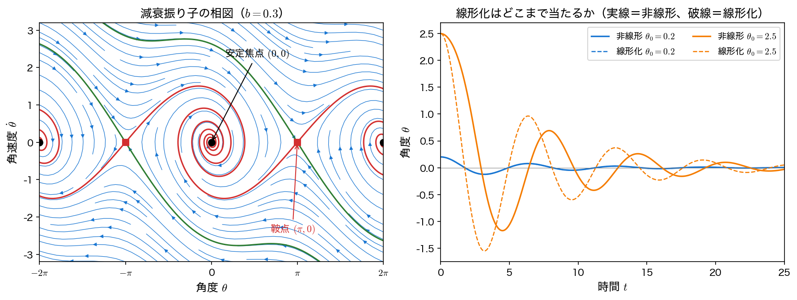
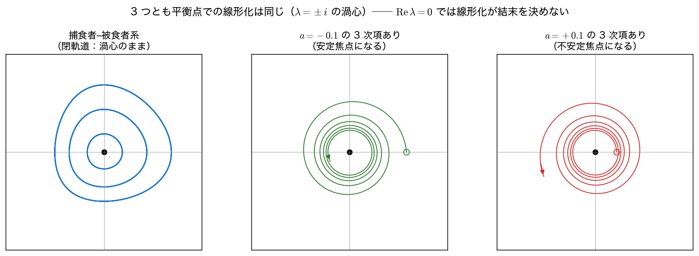

非線形系の線形化と平衡点解析
前ページでは線形系 \(\dot{\mathbf x}=A\mathbf x\) の運命が \(A\) の固有値だけで決まることを見た。しかし現実のシステムはほとんどが非線形である ── 振り子は \(\sin\theta\) を含み、生態系は個体数の積を含み、化学反応は濃度のべきを含む。伝達関数はこれらに定義すらできない。
それでも 平衡点のごく近くだけ を見るなら、非線形系を線形系で置き換えられる。本ページではその手続き（線形化）と、それがいつ正当化されるか（Hartman–Grobman の定理）、そして いつ破れるか を扱う。
非線形系と平衡点
一般の自励系（時間を陽に含まない系）は
と書ける。\(\mathbf f\) が線形でなければ、解を閉じた形で書けることはまずない。そこで問いを変える ── すべての解を求めるのではなく、特別な解のまわりの振る舞いだけを知る のである。
\(\mathbf f(\mathbf x^{*})=\mathbf 0\) を満たす \(\mathbf x^{*}\) を 平衡点（equilibrium point） または 不動点（fixed point） という。ここに置かれた状態は動かない。線形系では \(\det A\neq0\) でありさえすれば平衡点は原点ただ一つだったが（\(A\) が特異なら \(\ker A\) の全点が平衡点になる）、非線形系では 複数あるのが普通 である。
本ページで扱う 減衰振り子 を例にとる。長さ \(L\) の振り子の運動方程式を \(\sqrt{g/L}\) で無次元化すると
となる。ここで無次元時間を \(\tau=t\sqrt{g/L}\) と取り、ドットは \(\tau\) による微分を表す。\(b\) も無次元化された減衰係数である（以下では煩雑さを避けて \(\tau\) を単に \(t\) と書く）。\(\mathbf x=(\theta,\omega)^{\top}\)、\(\omega=\dot\theta\) と置けば
である。平衡点は \(\omega=0\) かつ \(\sin\theta=0\)、すなわち
の 無限個 ある。\(n\) が偶数なら真下に垂れ下がった状態、奇数なら真上に逆立ちした状態である。物理的直観では前者は安定、後者は不安定 ── これを固有値で言い当てられるようにしたい。
ヤコビ行列による線形化
平衡点 \(\mathbf x^{*}\) からのずれを \(\delta\mathbf x=\mathbf x-\mathbf x^{*}\) と置き、\(\mathbf f\) を \(\mathbf x^{*}\) のまわりでテイラー展開する。以下では \(\mathbf f\) が \(\mathbf x^{*}\) の近傍で \(C^2\) 級（もしくは、少なくともヤコビ行列が局所リプシッツ連続）であるとする ── 余項を \(O(\lVert\delta\mathbf x\rVert^2)\) と書けるのはこの仮定のもとでのことである。
第1項は平衡点の定義から消える。第2項に現れる行列
を ヤコビ行列（Jacobian matrix） という。\(\lVert\delta\mathbf x\rVert\) が小さければ 2 次以上の項は無視できて
── これは前ページの線形系そのものである。平衡点ごとにヤコビ行列を計算し、その固有値を見る。これが線形安定性解析の全体像である。
1 次元の場合と同じ発想
スカラーの \(\dot x=f(x)\) なら \(J\) は数 \(f'(x^{*})\) にすぎず、\(f'(x^{*})<0\) なら安定、\(>0\) なら不安定である。\(x^{*}\) より右で \(f<0\)（左向きに押す）、左で \(f>0\)（右向きに押す）なら戻ってくる ── ヤコビ行列は、この「押し戻す向き」を多次元に一般化したものである。
振り子のヤコビ行列を sympy で記号的に求め、二つの平衡点で数値化して固有値を見る。
import numpy as np
import sympy as sp
th, om, bs = sp.symbols("theta omega b", real=True)
F = sp.Matrix([om, -bs*om - sp.sin(th)]) # (θ の時間微分, ω の時間微分)
J = F.jacobian([th, om])
print("ヤコビ行列 J =", J.tolist())
b = 0.3 # 減衰係数
for name, th0 in (("(0, 0) ", 0), ("(pi, 0) ", sp.pi)):
Jn = np.array(J.subs({th: th0, bs: b}), dtype=float)
ev = np.real_if_close(np.linalg.eigvals(Jn)) # 実の固有値は実数で表示
if np.max(np.abs(ev.imag)) > 1e-12:
kind = "安定焦点" if ev.real.max() < 0 else "不安定焦点"
else:
kind = "鞍点" if ev.real.prod() < 0 else "結節点"
print(f"{name}: J={Jn.tolist()}")
print(f" lambda={ev[0]:+.4f}, {ev[1]:+.4f} -> {kind}")
ヤコビ行列 J = [[0, 1], [-cos(theta), -b]]
(0, 0) : J=[[0.0, 1.0], [-1.0, -0.3]]
lambda=-0.1500+0.9887j, -0.1500-0.9887j -> 安定焦点
(pi, 0) : J=[[0.0, 1.0], [1.0, -0.3]]
lambda=+0.8612, -1.1612 -> 鞍点
ヤコビ行列は \(J=\begin{pmatrix}0&1\\-\cos\theta&-b\end{pmatrix}\) で、平衡点によって \(\cos\theta\) の符号が変わる。
- \((0,0)\)（垂れ下がり）：\(\det J=1>0\)、\(\mathrm{tr}\,J=-0.3<0\)、判別式 \(0.09-4<0\) → 安定焦点。固有値の実部 \(-0.15=-b/2\) が減衰の速さ、虚部 \(0.9887=\sqrt{1-b^2/4}\) が振動の角周波数である。
- \((\pi,0)\)（逆立ち）：\(\det J=-1<0\) → 無条件に 鞍点。\(\lambda=+0.8612\) の方向に置かれたずれは指数的に増大する ── 逆立ちが不安定であることの数学的な理由である。
摩擦を強めても \((\pi,0)\) が安定になることはない。\(\det J=-\cos\pi=-1\) は \(b\) に依らず負だからである。安定化するには制御入力（トルク）を加えて \(J\) そのものを変えるしかない ── 倒立振子の制御問題である。
線形化はどこまで当たるか
線形化は \(O(\lVert\delta\mathbf x\rVert^2)\) を捨てた近似なので、平衡点から離れるほど当たらなくなる。どのくらいで崩れるかを数値で見る。線形化した振り子 \(\ddot\theta+b\dot\theta+\theta=0\)（\(\sin\theta\approx\theta\)）の解は、初速 \(0\) ・初期角 \(\theta_0\) に対して
である。これを非線形方程式の数値解と突き合わせる。
from scipy.integrate import solve_ivp
def pendulum(t, y, b=0.3):
return [y[1], -b*y[1] - np.sin(y[0])]
wd = np.sqrt(1 - b**2/4) # 減衰角周波数
tt = np.linspace(0, 25, 250001)
print(f"線形化の予測: 減衰率 -b/2={-b/2:.4f} 減衰角周波数 {wd:.4f} "
f"周期 {2*np.pi/wd:.4f}")
for th0 in (0.05, 0.2, 1.0, 2.5):
s = solve_ivp(pendulum, (0, 25), [th0, 0.0], t_eval=tt,
rtol=1e-12, atol=1e-14)
lin = th0*np.exp(-b*tt/2)*(np.cos(wd*tt) + b/(2*wd)*np.sin(wd*tt))
t_nl = tt[np.argmin(s.y[0][tt < 12])] # 最初の谷の時刻
t_li = tt[np.argmin(lin[tt < 12])]
err = np.abs(s.y[0] - lin).max()
print(f"theta0={th0:4.2f}: 最大差={err:.4f}（振幅比 {err/th0:6.2%}） "
f"谷 t={t_nl:.3f}（線形 {t_li:.3f}、{t_nl/t_li - 1:+.2%}）")
線形化の予測: 減衰率 -b/2=-0.1500 減衰角周波数 0.9887 周期 6.3551
theta0=0.05: 最大差=0.0000（振幅比 0.02%） 谷 t=3.178（線形 3.178、+0.01%）
theta0=0.20: 最大差=0.0007（振幅比 0.37%） 谷 t=3.183（線形 3.178、+0.19%）
theta0=1.00: 最大差=0.0922（振幅比 9.22%） 谷 t=3.331（線形 3.178、+4.82%）
theta0=2.50: 最大差=1.8381（振幅比 73.52%） 谷 t=4.492（線形 3.178、+41.36%）
\(\theta_0=0.05\)（約 \(3^\circ\)）では誤差 \(0.02\)% で、線形化解と非線形解は事実上区別できない。\(\theta_0=0.2\)（約 \(11^\circ\)）でも \(0.37\)%。ところが \(\theta_0=1.0\)（約 \(57^\circ\)）で \(9\)%、\(\theta_0=2.5\)（約 \(143^\circ\)）では \(73\)% にもなり、最初の谷の時刻も \(41\)% 遅れる。振幅が大きいほど周期が伸びる のは振り子のよく知られた性質で、\(0<|\theta|<\pi\) で \(|\sin\theta|<|\theta|\) ゆえに復元力が線形近似より弱くなるためである。この効果は非線形項が担っているので、線形化では原理的に再現できない。

相図の左半分は、非線形系の大域的な構造を見せている。鞍点から伸びる 安定多様体（stable manifold） は「そこに乗れば逆立ち点に到達できる」ぎりぎりのエネルギーをもつ軌道であり、相平面を「左の焦点へ落ちる領域」と「右の焦点へ落ちる領域」に分ける ── このような境界を 分離線（separatrix） という。どの平衡点に落ち着くか（吸引域）は、鞍点という不安定な点の性質が決めている。
線形化で分かること・分からないこと
線形化は平衡点の 局所的な 性質しか教えない。「\((0,0)\) が安定焦点である」ことは分かるが、「どこまで離れた初期値なら \((0,0)\) に戻るのか」（吸引域の広さ）は分からない。上の相図でいえば、分離線の位置は線形化からは出てこない。大域的な問いに答えるには数値積分や、リアプノフ関数のような別の道具が要る。
Hartman–Grobman の定理と、その適用限界
線形化がなぜ正当化されるのかを述べるのが次の定理である。
Hartman–Grobman の定理
\(\mathbf f\) が \(\mathbf x^{*}\) の近傍で \(C^1\) 級（解の存在と一意性が保証される）であり、平衡点 \(\mathbf x^{*}\) でヤコビ行列 \(J(\mathbf x^{*})\) の固有値がすべて \(\mathrm{Re}\,\lambda\neq0\) を満たすとする（このような平衡点を 双曲型（hyperbolic） という）。このとき \(\mathbf x^{*}\) のある近傍で、非線形系 \(\dot{\mathbf x}=\mathbf f(\mathbf x)\) の軌道と線形化系 \(\frac{d}{dt}\delta\mathbf x=J\delta\mathbf x\) の軌道は、連続な 1 対 1 写像（同相写像）で互いに移り合う。
つまり 双曲型でありさえすれば、平衡点の近くの相図は線形化のそれと定性的に同じ である。安定焦点は安定焦点、鞍点は鞍点であり、非線形項が結論を覆すことはない。振り子の \((0,0)\)（\(\mathrm{Re}\,\lambda=-0.15\)）も \((\pi,0)\)（\(\lambda=+0.86,-1.16\)）も双曲型なので、前節の判定は保証つきである。
裏を返せば、\(\mathrm{Re}\,\lambda=0\) の固有値が一つでもあると定理は何も言わない。前ページで「渦心は面積ゼロの境界の上にしかない」と述べた話が、ここで効いてくる。線形化が渦心（\(\lambda=\pm j\omega\)）を出したとき、非線形項がわずかでもあれば結末は内向きにも外向きにも転びうるのである。
具体例で確かめる。まず 捕食者–被食者系（ロトカ–ヴォルテラ系）
の平衡点 \((2,2)\) では \(J=\begin{pmatrix}0&-1\\1&0\end{pmatrix}\)、\(\lambda=\pm j\) の渦心である。次に、線形部分がまったく同じで 3 次の項だけが違う系
を考える。原点でのヤコビ行列は \(a\) に依らず \(\begin{pmatrix}0&-1\\1&0\end{pmatrix}\) で、やはり \(\lambda=\pm j\) である。ところが極座標 \(x=r\cos\theta,\ y=r\sin\theta\) に移すと
となり、\(a<0\) なら \(r\to0\)（安定焦点）、\(a>0\) なら有限時間で発散（不安定焦点） である。3 つとも線形化は同一なのに、結末は 3 通りに分かれる。
def lotka(t, y):
return [y[0]*(1 - 0.5*y[1]), y[1]*(0.5*y[0] - 1)]
def cubic(t, y, a):
r2 = y[0]**2 + y[1]**2
return [-y[1] + a*y[0]*r2, y[0] + a*y[1]*r2]
Jlv = np.array([[0.0, -1.0], [1.0, 0.0]]) # (2,2) でのヤコビ行列
ev = np.linalg.eigvals(Jlv)
print(f"捕食者–被食者系 (2,2) での J={Jlv.tolist()}")
print(f" lambda={ev[0]:+.1f}, {ev[1]:+.1f}")
s = solve_ivp(lotka, (0, 200), [3.0, 2.0],
rtol=1e-12, atol=1e-14, dense_output=True)
tt = np.linspace(0, 200, 200001)
y = s.sol(tt)
H = 0.5*y[0] - np.log(y[0]) + 0.5*y[1] - np.log(y[1]) # 保存量
first, last = tt < 50, tt > 150
print(f"保存量 H の変動 = {H.max() - H.min():.2e}")
print(f" x の振幅: t<50 で {np.ptp(y[0][first]):.4f}、"
f"t>150 で {np.ptp(y[0][last]):.4f} ── 減衰しない")
for a in (-0.1, +0.1):
s = solve_ivp(cubic, (0, 15), [0.5, 0.0], args=(a,), rtol=1e-12, atol=1e-14)
r1 = np.hypot(*s.y[:, -1])
exact = 1/np.sqrt(1/0.5**2 - 2*a*15) # 極座標での解析解
print(f"3 次項 a={a:+.1f}: 半径 0.5000 -> {r1:.4f}"
f"（解析解 {exact:.4f}、誤差 {abs(r1 - exact):.2e}）")
捕食者–被食者系 (2,2) での J=[[0.0, -1.0], [1.0, 0.0]]
lambda=+0.0+1.0j, +0.0-1.0j
保存量 H の変動 = 1.69e-11
x の振幅: t<50 で 1.7484、t>150 で 1.7484 ── 減衰しない
3 次項 a=-0.1: 半径 0.5000 -> 0.3780（解析解 0.3780、誤差 5.35e-13）
3 次項 a=+0.1: 半径 0.5000 -> 1.0000（解析解 1.0000、誤差 3.97e-12）
捕食者–被食者系では保存量 \(H=\tfrac12x-\ln x+\tfrac12y-\ln y\) が \(10^{-11}\)（数値積分の誤差の範囲）で一定に保たれ、\(t<50\) と \(t>150\) で振幅がともに \(1.7484\) ── 200 単位時間たっても まったく減衰しない。閉軌道（真の渦心）である。一方、3 次項を入れた系は同じ線形化にもかかわらず \(a=-0.1\) で半径が \(0.5\to0.378\) と縮み、\(a=+0.1\) で \(0.5\to1.0\) と広がる。いずれも極座標の解析解と \(10^{-12}\) 精度で一致する。

\(\mathrm{Re}\,\lambda=0\) が出たら止まる
数値計算では固有値の実部がちょうど \(0\) になることは稀で、\(10^{-8}\) 程度の値が出る。これを機械的に「実部が負だから安定」と読んではいけない。\(\mathrm{Re}\,\lambda\) が \(0\) からどれだけ離れているかは、数値誤差とモデルパラメータの不確かさの幅 と比べて判断する必要がある。真の実部が \(-10^{-8}\) だと確信できるならその平衡点は双曲型で、線形化による判定はそのまま正しい。しかし誤差の幅が \(10^{-8}\) より大きいなら符号すら決まっておらず、線形化では判定できない と結論するのが正しい。実際にどちらへ転ぶかは高次の項（中心多様体の理論や標準形の理論が扱う）か、数値積分で確かめるしかない。
ちなみに \(\mathrm{Re}\,\lambda=0\) が起こるのは偶然ではない。パラメータを連続的に動かすと固有値も動き、安定から不安定へ移る瞬間に必ず虚軸を横切る。この瞬間に系の定性的な振る舞いが変わることを 分岐（bifurcation） といい、リミットサイクルの発生（ホップ分岐）などがここで起こる。境界は「めったに起きない例外」ではなく、現象が切り替わる最も面白い場所 である（演習3 で扱う）。
まとめ
- 非線形系 \(\dot{\mathbf x}=\mathbf f(\mathbf x)\) の平衡点は \(\mathbf f(\mathbf x^{*})=\mathbf 0\) の解で、線形系と違って 複数（振り子では無限個） ありうる。
- 平衡点のまわりで ヤコビ行列 \(J=\partial\mathbf f/\partial\mathbf x\) による線形化 \(\frac{d}{dt}\delta\mathbf x\approx J(\mathbf x^{*})\delta\mathbf x\) を作れば、前ページの固有値による分類がそのまま使える。減衰振り子では \((0,0)\) が安定焦点（\(\lambda=-0.15\pm0.9887j\)）、\((\pi,0)\) が鞍点（\(\lambda=+0.8612,\,-1.1612\)）と判定される。
- 線形化は 局所的な 近似である。振り子では \(\theta_0=0.2\) で誤差 \(0.37\)%、\(\theta_0=2.5\) では \(73.5\)% と崩れ、周期も \(41\)% ずれる。吸引域の広さや分離線の位置は線形化からは分からない。
- Hartman–Grobman の定理：固有値がすべて \(\mathrm{Re}\,\lambda\neq0\)（双曲型）なら、平衡点近傍の相図は線形化のそれと定性的に一致する。
- \(\mathrm{Re}\,\lambda=0\) では定理が使えない。線形化が同じ \(\lambda=\pm j\) でも、捕食者–被食者系は閉軌道、\(a=\mp0.1\) の 3 次項を加えた系は安定焦点／不安定焦点と、結末は分かれる。この境界こそが分岐の起こる場所である。
本講義との接続
第8回の伝達関数の極、本回の状態行列の固有値、そして非線形系のヤコビ行列の固有値 ── いずれも「システムの時間発展を、行列の固有値という代数的な量に還元する」同じ発想である。第13回の 特異値分解 は行列を別の観点（データの説明力）から分解する道具であり、第14回の 動的モード分解 はデータから直接この「システム行列」とその固有値を推定する手法で、本回の固有値解析をデータ駆動の形で再訪することになる。演習で扱うファン・デル・ポール振動子も、\(\mu=0\) でちょうど固有値が虚軸を横切って原点の安定性が入れ替わる例である。ただしこの系のリミットサイクルは \(\mu\to0\) でも振幅が \(2\) のまま縮まず（\(\mu=\pm0.01\) でも振幅は \(2.0000\)）、振幅が \(\sqrt{|\mu|}\) で立ち上がる教科書的なホップ分岐とは違う 退化した 場合になっている。\(\mathrm{Re}\,\lambda=0\) の境界では、線形化が結末を決めないだけでなく、分岐の型そのものも典型どおりとは限らない。